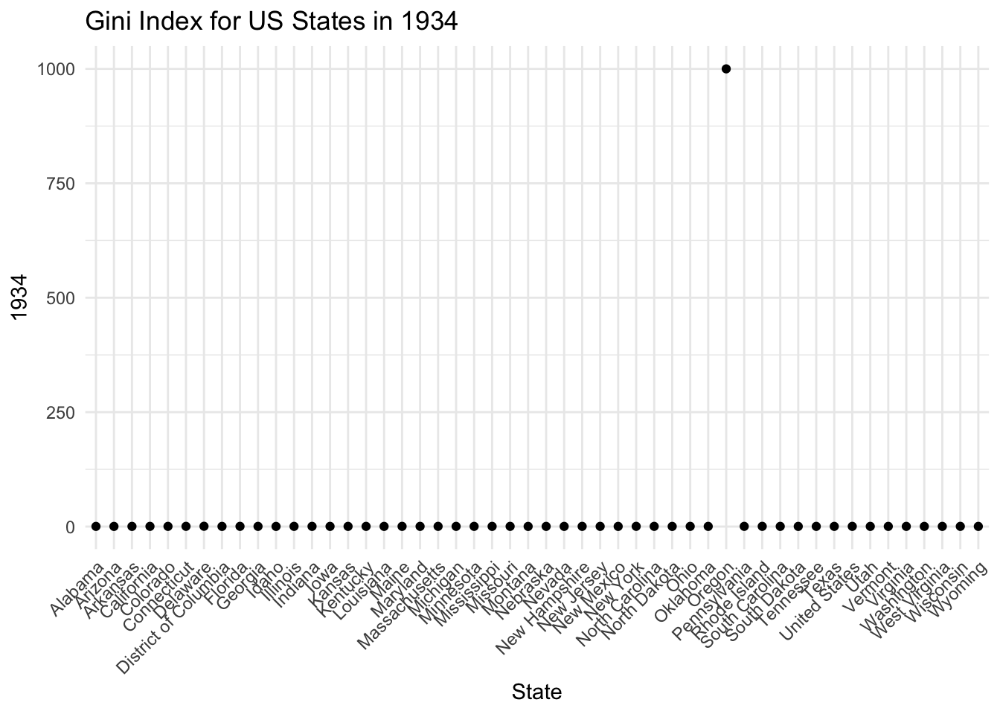
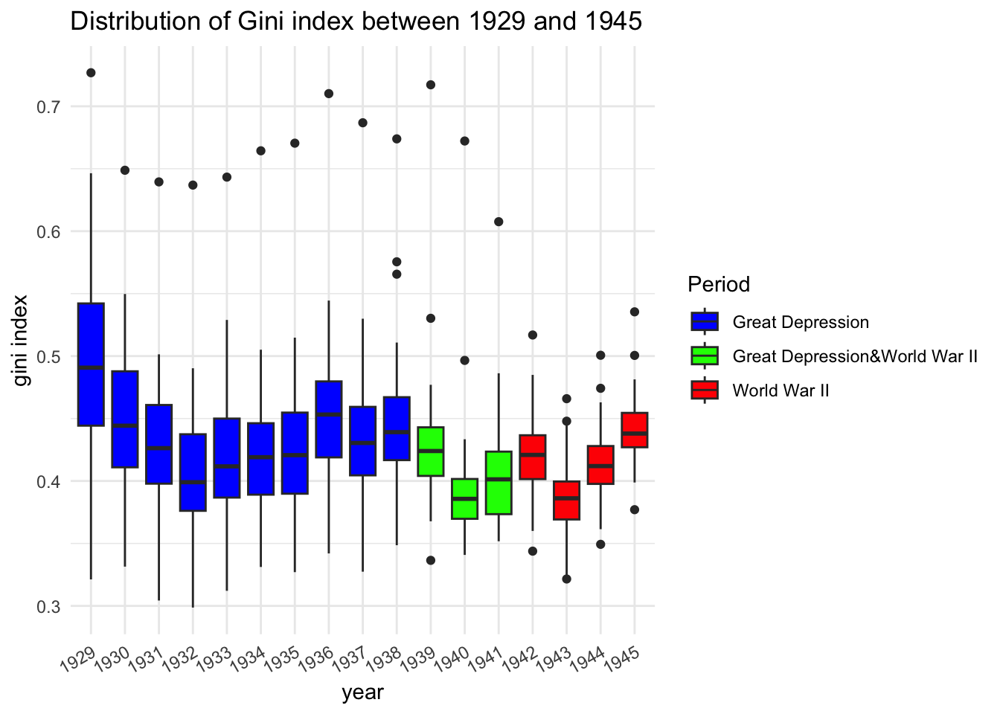
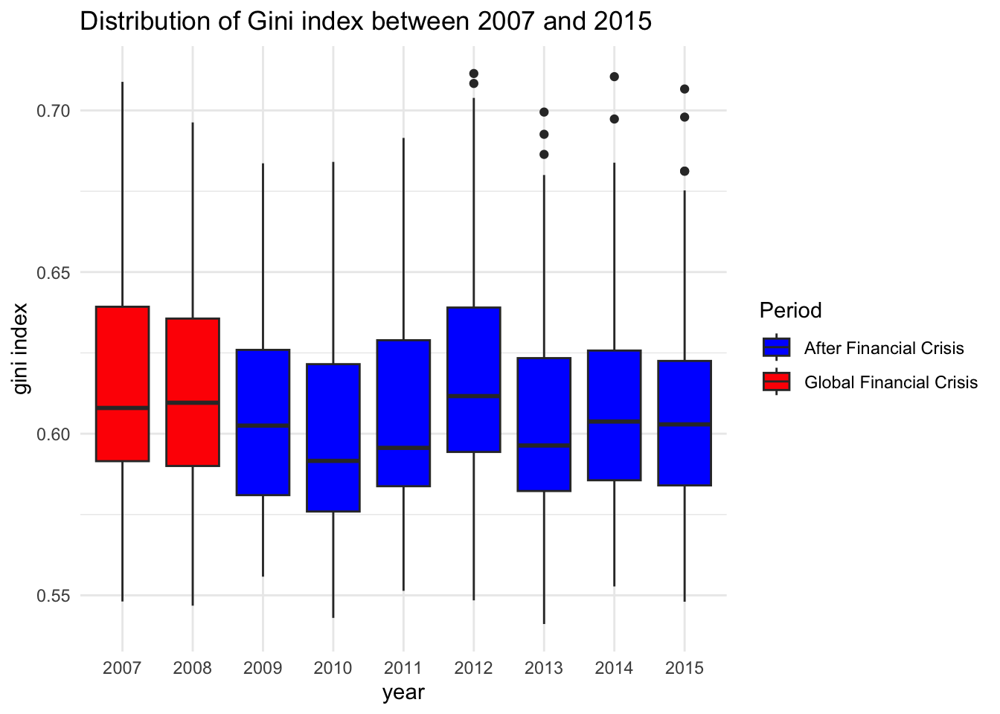
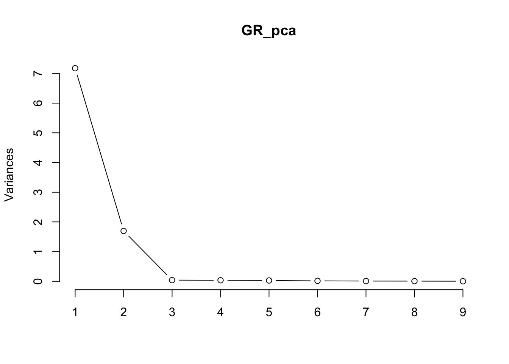

Code
Inequality_GD <- read_csv("Inequality_GD.csv") %>%
select(-c("...1"))
Inequality_GR <- read_csv("Inequality_GR.csv")%>%
select(-c("...1"))Di Cui
September 1, 2023
The Gini coefficient offers a quantitative lens to assess income inequality, a pressing societal concern. It scales from zero, representing complete equality, to one, denoting extreme inequality, thus encapsulating the economic disparities within a society (Adam, 2023).
This report delves into the variations in the Gini index across US states. At its core, we’re interested in examining how pivotal events such as the Great Depression, World War II, and the Global Financial Crisis influenced state-level income disparities.
To ensure rigorous insights, we begin with detailed data preparation and cleansing. This foundational step paves the way for insightful data visualizations, highlighting intrinsic trends and anomalies.
We employ Principal Component Analysis (PCA) and Multidimensional Scaling (MDS) as our primary analytical tools, recognized for their prowess in reducing multidimenstional data. The report will also touch upon the potential constraints and issues faced throughout our investigation.”
The primary dataset for this analysis has been procured from the repository titled “U.S. State-Level Income Inequality Data”, diligently compiled by Mark W. Frank. The data repository furnished two distinct datasets for the periods: 1929 to 1945: Capturing the Gini index values across 50 U.S. states. 2007 to 2015: This dataset details the Gini index values for an expanded list of 52 U.S. states, reflecting the statehood transitions post-1959, Alaska and Hawaii became states. Given the absence of data from 1946 to 2006, and the changes in statehood, it was decided not to merge the two datasets.
The dataset from 2007 to 2015 exhibited missing values for some states in 2010, accounting for approximately 1.5% Figure 1 of the entire dataset. To address this, we applied KNN imputation, which takes into account inter-variable relationships. This method not only preserves a more natural variability in imputed values but also offers a more sophisticated approach than mere column-wise mean imputation.
From the Figure 2, an evident outlier was identified in the 1929 to 1945 dataset: Oregon’s Gini index recorded as 1000 in 1934. Considering the Gini index’s range is between 0 and 1, this is a data entry error. We employed mean imputation to address this, calculating the average from the years immediately preceding and following 1934 for Oregon.
Inequality_GD_long <- Inequality_GD %>%
pivot_longer(cols = `1929`:`1945`,
names_to = "year",
values_to = "gini index")
Inequality_GR_long <- Inequality_GR %>%
pivot_longer(cols = `2007`:`2015`,
names_to = "year",
values_to = "gini index")
ggplot(Inequality_GD, aes(x = State, y = `1934`)) +
geom_point() +
theme(axis.text.x = element_text(angle = 45, hjust = 1)) +
ggtitle("Gini Index for US States in 1934")
##KNN imputation
state_col <- Inequality_GR$State
# Remove 'State' column for imputation
GR_for_imputation <- Inequality_GR[, -which(names(Inequality_GR) == "State")]
min_max_scale <- function(x) {
(x - min(x, na.rm = TRUE)) / (max(x, na.rm = TRUE) - min(x, na.rm = TRUE))
}
GR_normalized <- as.data.frame(lapply(GR_for_imputation, min_max_scale))
GR_imputed <- knnImputation(GR_normalized, k = 5)
original_mins <- apply(GR_for_imputation, 2, min, na.rm = TRUE)
original_maxs <- apply(GR_for_imputation, 2, max, na.rm = TRUE)
GR_rescaled <- as.data.frame(mapply(function(col, min_val, max_val) {
col * (max_val - min_val) + min_val
}, GR_imputed, original_mins, original_maxs, SIMPLIFY=FALSE))
names(GR_rescaled) <- names(GR_for_imputation)
GR_rescaled$State <- state_coloregon_1933 <- Inequality_GD[Inequality_GD$State == "Oregon", "1933"]
oregon_1935 <- Inequality_GD[Inequality_GD$State == "Oregon", "1935"]
# Replace the 1934 value with the average of 1933 and 1935 for Oregon
Inequality_GD[Inequality_GD$State == "Oregon", "1934"] <-
(oregon_1933 + oregon_1935) / 2
GD_new <-Inequality_GDWe ensured data consistency and corrected spatial discrepancies for accurate results. For better visualization, adding column to provides state abbreviations, like “Los Angeles” as “LA”.
From the Figure 3, between 1929 and 1945, the Gini index dropped from 0.49 to 0.40 during the early Great Depression, a result of significant stock market losses that reduced the wealth gap between the upper and middle class (Goldin & Margo, 1992). The index fluctuated between 0.39 and 0.45 throughout the later Depression years and World War II, with the spread narrowing over time. This reduction in inequality can be attributed to progressive tax policies implemented to fund the war, which disproportionately taxed the wealthy (Piketty & Saez, 2003).
GD_new_long <- GD_new %>%
pivot_longer(cols = `1929`:`1945`,
names_to = "year",
values_to = "gini index")
GD_summary <- GD_new_long %>%
group_by(year) %>%
summarise(`mean of Gini index`= round(mean(`gini index`),5) )%>%
rename("Year" = "year",
"Mean of Gini index"= "mean of Gini index")
#summary table
DT::datatable(GD_summary,options = list(pageLength = 4,
searching = FALSE))GD_new_long$period <- case_when(GD_new_long$year < 1939 ~ "Great Depression",
GD_new_long$year >= 1939 & GD_new_long$year < 1942 ~"Great Depression&World War II",
TRUE~ "World War II")
#Colored Boxplot
ggplot(GD_new_long, aes(x = year, y = `gini index`, fill = period)) +
geom_boxplot() +
scale_fill_manual(values = c("Great Depression" = "blue", "Great Depression&World War II" = "green", "World War II" = "red")) +
labs(fill = "Period",
title = "Distribution of Gini index between 1929 and 1945") +
theme_minimal()+
theme(axis.text.x = element_text(angle = 30, hjust = 1))
Contrastingly, from 2007 to 2015,from the Figure 4 the Gini index surged by over 40%, averaging around 0.6. This rise is linked to the Global Financial Crisis (GFC) causing major job losses, especially in the construction and finance sectors, and affecting primarily the middle and lower-income households. Post-GFC, the index slightly decreased in 2009 and 2010 but stabilized around 0.6 thereafter, with noticeable outliers appearing between 2012 and 2015.
GR_rescale_long <- GR_rescaled %>%
pivot_longer(cols = `2007`:`2015`,
names_to = "year",
values_to = "gini index")
GR_summary <- GR_rescale_long %>%
group_by(year) %>%
summarise(`mean of Gini index`= round(mean(`gini index`),5) )%>%
rename("Year" = "year",
"Mean of Gini index" = "mean of Gini index")
#summary table
DT::datatable(GR_summary,options = list(pageLength = 4,
searching = FALSE))#Colored boxplot
GR_rescale_long$period <- ifelse(GR_rescale_long$year < 2009, "Global Financial Crisis", "After Financial Crisis")
# Boxplot
ggplot(GR_rescale_long, aes(x = year, y = `gini index`, fill = period)) +
geom_boxplot() +
scale_fill_manual(values = c("After Financial Crisis" = "blue", "Global Financial Crisis" = "red")) +
labs(fill = "Period",
title = "Distribution of Gini index between 2007 and 2015") +
theme_minimal()
We only consider metric variables and employ Euclidean distance, eliminating the need for standardization due to the consistent unit of measurement. This section delves into the foundations of Principal Component Analysis (PCA) and Multidimensional Scaling (MDS).
PCA reduces data dimensions while retaining the utmost information, aiming to maximize variance explanation in the process. The associated assumptions include: - Linearity: Variables possess a linear relationship. - Orthogonality: Principal components are mutually uncorrelated. - Homoscedasticity: A consistent variance across all data points. - Independence: Variables operate independently.
MDS visualizes data point similarities in a reduced dimensional space, with the following assumptions: - Metric: Data points distances are metric. - Data Similarity: The measures used effectively depict data relationships. - Continuity: Data reveals a continuous structure. - Linearity: A linear interrelation exists among variables.”
In this section, we employ Multidimensional Scaling (MDS) to analyze two datasets, each containing approximately 15 variables. MDS offers an optimal representation of data in a low-dimensional space, aiding visualization of sample similarities/dissimilarities. By observing plots generated from datasets linked to specific events, we can discern the impact of these events on the data.
GD_sf <- left_join(GD_new,GD_states_sf,by = c("State" = "NAME")) %>%
select(-State) %>%
rename("State" = "abb")
GD_sf$State[is.na(GD_sf$State)] <- "US"
GR_sf <- left_join(GR_rescaled,GR_states_sf,by = c("State" = "NAME")) %>%
select(-State) %>%
rename("State" = "abb")
GR_sf$State[is.na(GR_sf$State)] <- "US"mds <- GD_new %>%
select(-1) %>%
dist() %>%
cmdscale() %>%
as_tibble()
colnames(mds) <- c("Dim.1", "Dim.2")
# K-means clustering
clust <- kmeans(mds, 4)$cluster %>%
as.factor()
mds <- mds %>%
mutate(groups = clust,
state = GD_sf$State)
# Plot and color by groups
ggscatter(mds, x = "Dim.1", y = "Dim.2",
label = "state",
color = "groups",
palette = "jco",
size = 1,
ellipse = TRUE,
ellipse.type = "convex",
repel = TRUE) +
ggtitle("Classical MDS 1929-1945") -> mds1mds <- GR_rescaled %>%
select(-State) %>%
dist() %>%
cmdscale() %>%
as_tibble()
colnames(mds) <- c("Dim.1", "Dim.2")
# K-means clustering
clust <- kmeans(mds, 4)$cluster %>%
as.factor()
mds <- mds %>%
mutate(groups = clust,
state = GR_sf$State)
# Plot and color by groups
ggscatter(mds, x = "Dim.1", y = "Dim.2",
label = "state",
color = "groups",
palette = "jco",
size = 1,
ellipse = TRUE,
ellipse.type = "convex",
repel = TRUE)+
ggtitle("Classical MDS 2007-2015") -> mds2From the Figure 5, similarities and dissimilarities are evident based on distances between data points. For instance, in the “Classical MDS 1929-1945” plot, Delaware appears as a potential outlier. Yet, in the “Classical MDS 2007-2015”, Delaware clusters with states like West Virginia and Washington, while California and others emerge as outliers.
We use another type of MDS that is called sammon mapping to see whether our conclusion still holds. Sammon mapping is not based on eigenvalue decomposition and linear mapping so that it preserves the local structure.
Initial stress : 0.00145
stress after 10 iters: 0.00096, magic = 0.500
stress after 20 iters: 0.00096, magic = 0.500sam$points %>%
as_tibble() -> sam
colnames(sam) <- c("Sam.1", "Sam.2")
# K-means clustering
clust <- kmeans(sam, 4)$cluster %>%
as.factor()
sam <- sam %>%
mutate(groups = clust,
state = GR_sf$State)
# plot
ggscatter(sam, x = "Sam.1", y = "Sam.2",
label = "state",
color = "groups",
palette = "jco",
size = 1,
ellipse = TRUE,
ellipse.type = "convex",
repel = TRUE)+
ggtitle("SAM 2007-2015") -> Sam2As you can see from the Figure 6, it has a similar pattern to classic MDS, but some states, such as North Dakota and New Mexico will be further away (not similar).
From our analysis, PC1 accounts for 75.8% of the total variance, while PC2 contributes an additional 15.28%. Together, PC1 and PC2 capture 91.08% of the data’s overall variance. This high cumulative proportion suggests that these two components predominantly encapsulate the dataset’s information, validating our choice for dimensionality reduction.
Importance of components:
PC1 PC2 PC3 PC4 PC5 PC6 PC7
Standard deviation 3.590 1.6116 0.78748 0.57044 0.35623 0.34949 0.29707
Proportion of Variance 0.758 0.1528 0.03648 0.01914 0.00746 0.00718 0.00519
Cumulative Proportion 0.758 0.9108 0.94730 0.96644 0.97391 0.98109 0.98628
PC8 PC9 PC10 PC11 PC12 PC13 PC14
Standard deviation 0.24100 0.21648 0.20062 0.17286 0.12792 0.12232 0.11231
Proportion of Variance 0.00342 0.00276 0.00237 0.00176 0.00096 0.00088 0.00074
Cumulative Proportion 0.98970 0.99246 0.99483 0.99658 0.99755 0.99843 0.99917
PC15 PC16 PC17
Standard deviation 0.08716 0.08092 2.665e-07
Proportion of Variance 0.00045 0.00039 0.000e+00
Cumulative Proportion 0.99961 1.00000 1.000e+00The Figure 7 further confirms this decision, identifying PC2 as an elbow point.
Upon analyzing the correlation between the Gini index and the principal components, we observe that a consistently negative and weak correlation with PC1 but have a tendency to become stronger. This meaning the pattern represented by PC1 is becoming more inversely related to the Gini index over time. A variable relationship with PC2: negative for 1929-1938 but turns positive for 1939-1945. Notably, 1942 and 1945 showcase a strong positive correlation, whereas 1937-1939 indicates weak or negligible correlation.
# Extract loadings
loadings <- GD_pca$rotation[, 1:2] # considering only PC1 and PC2
transposed_loadings <- t(loadings)
transposed_df1 <- as.data.frame(transposed_loadings [,1:9])
rownames(transposed_df1) <- c("PC1", "PC2")
colnames(transposed_df1) <- 1929:1937
transposed_loadings <- t(loadings)
transposed_df2 <- as.data.frame(transposed_loadings [,10:17])
rownames(transposed_df2) <- c("PC1", "PC2")
colnames(transposed_df2) <- 1938:1945
transposed_df1 1929 1930 1931 1932 1933 1934
PC1 -0.2349858 -0.2459327 -0.2571730 -0.2603796 -0.2616853 -0.2680236
PC2 -0.2691690 -0.2588394 -0.1902042 -0.1824073 -0.1750844 -0.1299880
1935 1936 1937
PC1 -0.2673863 -0.2687829 -0.27104249
PC2 -0.1491159 -0.1243959 -0.08455504 1938 1939 1940 1941 1942 1943
PC1 -0.25702053 -0.26145875 -0.2445857 -0.2290794 -0.1856574 -0.1878753
PC2 -0.01160135 0.02923975 0.1828159 0.2239589 0.3761331 0.3952901
1944 1945
PC1 -0.1964641 -0.1943193
PC2 0.4043742 0.3909881The correlation Figure 8 reveals that all years negatively align with PC1. Besides, Early years exhibit negative correlations with PC2, mid-years are vertical, and later years are positive. In essence, PC1 primarily reflects inequality during the early World War II years. Greater inequality during this period corresponds to higher PC1 values. And PC2 embodies inequality nuances from both the Great Depression era and the mid to late World War II years.
Examining the data further, states such as CT(Connecticut), PA(Pennsylvania), and MA(Massachusetts) exhibit pronounced inequality during the Great Depression (1929-1933), impacting their overall inequality significantly. Conversely, DE(Delaware) displayed the most significant inequality during World War II (1939-1945), with FL and NY also showing heightened inequality.
The distance Figure 9 distinctively groups states into nearly 4 clusters.” biplot distinctively groups states into nearly 4 clusters. The closer distance between observation(States), States have more similar Gini index.
For the data spanning 2007 to 2015, we’ve selected PC1 and PC2 based on their standard deviations exceeding 1. Combined, they account for over 98% of the total variance.
Importance of components:
PC1 PC2 PC3 PC4 PC5 PC6 PC7
Standard deviation 2.6788 1.3022 0.19835 0.18431 0.16314 0.11831 0.08488
Proportion of Variance 0.7974 0.1884 0.00437 0.00377 0.00296 0.00156 0.00080
Cumulative Proportion 0.7974 0.9858 0.99014 0.99391 0.99687 0.99842 0.99922
PC8 PC9
Standard deviation 0.07188 0.04269
Proportion of Variance 0.00057 0.00020
Cumulative Proportion 0.99980 1.00000The elbow rule applied to the Figure 10 further supports our choice, indicating that PC2 is an appropriate selection.

2007 2008 2009 2010 2011 2012
PC1 -0.2335881 -0.2318800 -0.3395366 -0.3648976 -0.3580511 -0.3577311
PC2 -0.5952369 -0.5995428 -0.3048751 0.1111107 0.1798640 0.1906366
2013 2014 2015
PC1 -0.3595398 -0.3586613 -0.3593801
PC2 0.1953757 0.1934789 0.1914368Upon examining the correlation Figure 11 and the associated table, several observations stand out:
From 2007 to 2009, there’s a pronounced negative linear relationship between PC2 and each respective year. This is particularly evident in 2007 and 2008, where the relationship is strongly negative, and the values of PC2 are high.
Between 2010 and 2015, the relationship between PC2 and the corresponding year is relatively weaker and remains negative. These years also display a comparatively lower value of PC2.
Over the entire period, there’s a consistent negative linear relationship with PC1. PC1 and PC2 negativly affected by the Global Financial Crisis and this event lead to income inequality increase. In the post-Crisis, the inequality tend to decrease.
In the distance Figure 12, the Euclidean spacing between states like MA(Massachusetts) and NJ(New Jersey) or NV(Nevada) and CT(Connecticut) illustrates their comparative likeness or divergence. For instance, concerning the Gini index, closely spaced states likely followed similar trajectories or maintained consistent levels of income inequality over the years.
Conversely, NY(New York), FL(Florida) and MS(Mississippi) lie far from most other states might have unique or unusual trends in income inequality across the years, making them outliers.
Our MDS and PCA analysis revealed distinct patterns in U.S. income inequality across states and time periods. Our findings reveal that Connecticut ,Pennsylvania, Massachusetts exhibits the high level of inequality in the early year of Great Depression. In the middle and later of the World War II, Florida and New York demonstrate the highest levels of inequality. However, these insights come with caveats:
They simplify data interpretation by reducing dimensions, but this can result in information loss. PCA assumes linear relationships among variables, potentially missing non-linear patterns, while MDS outcomes depend on the chosen distance metric, leading to varying interpretations.
Specifically, MDS shows which states have similar inequality profiles, but not necessarily identical economic drivers. PCA identifies data patterns and correlations, like those between historical events and the Gini coefficient shifts, but can’t determine causality.
To draw more in-depth and accurate conclusions, these findings should be integrated with other analytical techniques or domain expertise, such as add modeling analysis.
Goldin, C., & Margo, R. A. (1992). The Great Compression: The Wage Structure in the United States at Mid-century. The Quarterly Journal of Economics, 107(1), 1-34.
Hayes, A. (2023, May 27). Gini Index Explained and Gini Co-efficients Around the World. Investopedia. https://www.investopedia.com/terms/g/gini-index.asp.
Piketty, T., & Saez, E. (2003). Income Inequality in the United States, 1913-1998. Quarterly Journal of Economics, 118(1), 1-41.
Pebesma, E., & Bivand, R. (2023). Spatial Data Science: With Applications in R. Chapman and Hall/CRC. https://doi.org/10.1201/9780429459016.
Pebesma, E., 2018. Simple Features for R: Standardized Support for Spatial Vector Data. The R Journal 10 (1), 439-446, https://doi.org/10.32614/RJ-2018-009.
Robinson D, Hayes A, Couch S (2023). broom: Convert Statistical Objects into Tidy Tibbles. R package version 1.0.4, https://CRAN.R-project.org/package=broom.
Wickham H, Averick M, Bryan J, Chang W, McGowan LD, François R, Grolemund G, Hayes A, Henry L, Hester J, Kuhn M, Pedersen TL, Miller E, Bache SM, Müller K, Ooms J, Robinson D, Seidel DP, Spinu V, Takahashi K, Vaughan D, Wilke C, Woo K, Yutani H (2019). “Welcome to the tidyverse.”Journal of Open Source Software, 4(43), 1686. doi:10.21105/joss.01686 https://doi.org/10.21105/joss.01686.
Tierney N (2017). “visdat: Visualising Whole Data Frames.” JOSS, 2(16), 355. doi:10.21105/joss.00355 https://doi.org/10.21105/joss.00355.
H. Wickham. ggplot2: Elegant Graphics for Data Analysis. Springer-Verlag New York, 2016.
Kassambara A (2023). ggpubr: ‘ggplot2’ Based Publication Ready Plots. R package version 0.6.0, https://CRAN.R-project.org/package=ggpubr.
Venables, W. N. & Ripley, B. D. (2002) Modern Applied Statistics with S. Fourth Edition. Springer, New York.ISBN 0-387-95457-0
Zeileis A, Fisher JC, Hornik K, Ihaka R, McWhite CD, Murrell P, Stauffer R, Wilke CO (2020). “colorspace: A Toolbox for Manipulating and Assessing Colors and Palettes.” Journal of Statistical Software, 96(1), 1-49. doi:10.18637/jss.v096.i01 https://doi.org/10.18637/jss.v096.i01.